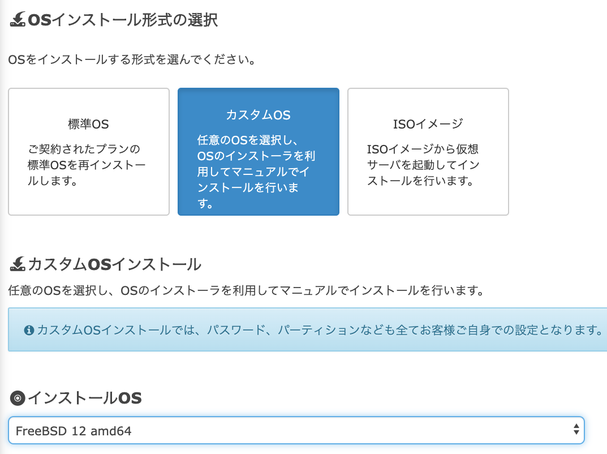
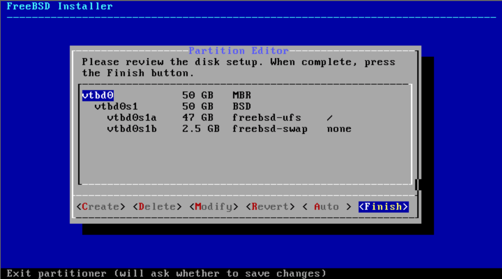

<br><br> ## <!-- <div style="border: thin solid; border-radius: 8px; padding: 8px; background: white;"><font color="midnightblue" style="text-transform: none;">--><span style="text-transform: none;">おこづかいで運用する<br>FreeBSD Jail on さくらのVPS</span><!-- </font></div> --> <br> @furandon_pig<br> <span style="font-size:60%;">https://furandon-pig.github.io/study-memo/docs/sakura-tokyo/20200806.html</span><br> <span style="font-size:60%;"><a href="https://sakura-tokyo.connpass.com/event/183730/">さくらのみんな会議（仮）＃1 「さくらのVPSについて語ろう！」</a> (2020/08/06)</span>
### 自己紹介 <table border="0"> <tr> <td> <img src="https://pbs.twimg.com/profile_images/2577120213/74t8gdwg96vj93vg46a4_200x200.png"> </td> <td> <ul> <li><a href="https://twitter.com/furandon_pig">@furandon_pig</a> <li>今日はLinuxが存在しない世界線からきました。 </td> </tr> </table>
### 今日のお話 * さくらのVPSのケーススタディのご紹介です。 * 個人的な生活環境をVPSで構築する話です。
### クラウド上のIaaS * 必要な時に必要なマシンリソースが確保可能。 * ちょっとした開発/実験環境用のインスタンス。 * 例えばDockerを使う。 * `-p 80:80` を忘れて `docker run` ...。 * コンテナ内とはいえ `root` はちょっと...。 * JSTに設定する方法を毎回調べてしまう。 * 日本語ロケールを設定する方法を毎回(略)。
### クラウド上のIaaS * 必要な時に必要なマシンリソースが確保可能。 * ちょっとした開発/実験環境用のインスタンス。 * 例えばDockerを使う。 * `-p 80:80` を忘れて `docker run` ...。 * コンテナ内とはいえ `root` はちょっと...。 * JSTに設定する方法を毎回調べてしまう。 * 日本語ロケールを設定する方法を毎回(略)。
### 顧客が本当に必要だったもの * なんか手軽に環境の作成・破棄ができる。 * sshでログインできる状態で起動してくる。 * JSTとか日本語ロケールが設定済みになってる。 * 後からポートリダイレクト可能にしたい。 * いつでも(24時間)使えるようにしておきたい。 * データは暗号化しておきたい。 * 小さくまとめた環境にしておきたい。
そんな都合の良い環境なんてあるの...🤔
# [さくらVPS](https://vps.sakura.ad.jp/specification/)<br>＋<br>FreeBSD Jail
### FreeBSD Jailとは？ * FreeBSDというUNIX系OS上で提供される機能。 * 分離したユーザランド環境を作成できる。 * Dockerコンテナと同等の機能を提供。
### さくらのVPS＋FreeBSD * さくらのVPS * 「カスタムOSインストール」機能。 * OSイメージにFreeBSD-12が用意されている。
### 環境構築の手順 * FreeBSDインストール * さくらのVPSコンソール * ストレージ暗号化の準備 * sshの設定 * ストレージの暗号化 * Jail用スクリプト(お手製)の準備
### さくらのVPSコンソール 
### ストレージ暗号化 * FreeBSDのストレージ暗号化機構。 * [geom(4)](https://www.freebsd.org/cgi/man.cgi?query=geom&sektion=4&apropos=0&manpath=FreeBSD+12.0-RELEA%3Cbr%3ESE+and+Ports) * [geli](https://www.freebsd.org/cgi/man.cgi?query=geli&apropos=0&sektion=0&manpath=FreeBSD+12.0-RELEASE+and+Ports&%3Cbr%3Earch=default&format=html)
### ストレージ暗号化の準備 
### ストレージ暗号化の設定 * `/boot/loader.conf` への設定追加。 ``` geom_bde_load=YES ``` ```sh $ df -h Filesystem Size Used Avail Capacity Mounted on /dev/vtbd0s1a 7.7G 1.4G 5.7G 19% / devfs 1.0K 1.0K 0B 100% /dev /dev/vtbd0s1b 40G 32M 36G 0% /enc ```
### ストレージ暗号化の設定 ```sh $ sudo kldload geom_bde [jailadm@sakura-tokyo ~]$ kldstat Id Refs Address Size Name ... 6 1 0xffffffff82821000 af94 geom_bde.ko ``` ```sh $ sudo umount /enc $ sudo vi /etc/fstab ```
### ストレージ暗号化の設定 * `/etc/fstab` の `/enc` をコメントアウト。 * インストール時に作成したパーティション ```sh # Device Mountpoint FStype Options Dump Pass# /dev/vtbd0s1a / ufs rw 1 1 #/dev/vtbd0s1b /enc ufs rw 2 2 /dev/vtbd0s1d none swap sw 0 0 ```
### ストレージ暗号化の設定 ```sh $ sudo mkdir /etc/gbde $ # このコマンドで設定ファイルが開く。保存時に新たにパスフレーズを聞かれるので設定する。 $ sudo gbde init /dev/vtbd0s1b -i -L /etc/gbde/vtbd0s1b.lock $ sudo gbde attach /dev/vtbd0s1b -l /etc/gbde/vtbd0s1b.lock $ ls /dev/vtbd0s1*.bde /dev/vtbd0s1b.bde $ sudo newfs -U /dev/vtbd0s1b.bde $ sudo mount /dev/vtbd0s1b.bde /enc $ df -h Filesystem Size Used Avail Capacity Mounted on /dev/vtbd0s1a 7.7G 1.4G 5.7G 19% / devfs 1.0K 1.0K 0B 100% /dev /dev/vtbd0s1b.bde 38G 8.0K 35G 0% /enc ```
### ストレージ暗号化の設定 * `/etc/rc.conf` に追記します。 ```sh #gbde_autoattach_all="YES" #gbde_devices="vtbd0s1b" #gbde_lockdir="/etc/gbde" ``` 手動でマウントする。 ```sh $ sudo gbde attach /dev/vtbd0s1b -l /etc/gbde/vtbd0s1b.lock Enter passphrase: $ sudo mount /dev/vtbd0s1b.bde /enc $ df -h Filesystem Size Used Avail Capacity Mounted on /dev/vtbd0s1a 7.7G 1.4G 5.7G 19% / devfs 1.0K 1.0K 0B 100% /dev /dev/vtbd0s1b.bde 38G 8.0K 35G 0% /enc ```
### NAT/ポートリダイレクト設定 * `/etc/rc.conf` に追記する。 ``` ifconfig_lo0="inet 127.0.0.1" ifconfig_lo0_alias0="inet 192.168.0.254 192.168.0.255 netmask 255.255.255.0" ifconfig_lo0_alias1="inet 192.168.0.10" ifconfig_lo0_alias2="inet 192.168.0.11" ifconfig_lo0_alias3="inet 192.168.0.12" ifconfig_lo0_alias4="inet 192.168.0.13" ifconfig_lo0_alias5="inet 192.168.0.14" ifconfig_lo0_alias5="inet 192.168.0.15" ifconfig_lo0_alias5="inet 192.168.0.16" ifconfig_lo0_alias5="inet 192.168.0.17" ifconfig_lo0_alias5="inet 192.168.0.18" ifconfig_lo0_alias5="inet 192.168.0.19" pf_enable="YES" pf_rules="/etc/pf.conf" pf_flags="" pflog_enable="YES" pflog_logfile="/var/log/pflog" pflog_flags="" ```
### NAT/ポートリダイレクト設定 * `/etc/pf.conf` に以下を設定する。 <pre style="font-size: 40%;"> ext_if="vtnet0" int_if="lo0" table <private> const { 192.168.0.0/24 } # IP mascarade nat on $ext_if inet from ($int_if) to ! <private> -> ($ext_if) # redirect rdr pass on $ext_if proto tcp from any to ($ext_if) port 2210 -> 192.168.0.10 port 22 rdr pass on $ext_if proto tcp from any to ($ext_if) port 2211 -> 192.168.0.11 port 22 # ...(中略)... rdr pass on $ext_if proto tcp from any to ($ext_if) port 2219 -> 192.168.0.19 port 22 # www rdr pass on $ext_if proto tcp from any to ($ext_if) port 80 -> 192.168.0.17 port 80 # packet filter pass in quick all pass out quick all </pre>
### Jail用のディレクトリ構成 <pre style="font-size: 50%;"> /enc/jail/ |-- FBSD12_DIST | |-- base.txz | `-- kernel.txz |-- JAIL_FAILS | |-- authorized_keys | |-- ay_gihub_key | |-- create_user.sh | |-- dot.bashrc | |-- dot.emacs | |-- dot.gitconfig | |-- dot.profile | |-- dot.screenrc | |-- sshd_config | |-- sudoers | `-- user__ssh_config |-- create_container.sh `-- remove_container.sh </pre>
### Jail用のディレクトリ作成 * 特定のディレクトリ以下にFreeBSDを展開する。 ```sh $ sudo mkdir -p /enc/jail $ cd /enc/jail $ sudo mkdir tmp01 $ sudo tar Jxfp FBSD12_DIST/base.txz -C ./tmp01 ```
### Jailの設定ファイル * `/etc/rc.conf` ``` tmp01 { path = /enc/jail/tmp01; ip4.addr = 192.168.0.11; ip6.addr = fe80::11; host.hostname = tmp01.example-sakura-tokyo.net; allow.raw_sockets; exec.start = "/bin/sh /etc/rc"; # exec.stop = "/bin/sh /etc/rc.shutdown"; interface = lo0; mount.devfs; persist; } ```
### Jailコンテナの起動・停止 ```sh $ sudo service jail onestart tmp01 $ sudo service jail onestop tmp01 ```
### 一連の手順をスクリプトにまとめる * 手順的には多いけどスクリプト化で樂する。 * Jailコンテナの作成・削除スクリプト
### まとめ * さくらのVPS＋FreeBSD Jailを使う方法の紹介。 * 1ヶ月800～900円のVPSプランでも充分。 * おこづかいでも賄える。 * FreeBSD Jail環境の構築手順の紹介。 * ストレージ暗号化。 * NAT/ポートリダイレクト。 * コンテナ作成・削除のスクリプト化。
### ご清聴ありがとうございました😃
### 参考URL * 背景画像は「[巣栗渓谷から見たオリオン座の写真素材](https://www.pakutaso.com/20190329060post-19663.html)」(前田3号 様)撮影の画像を使用しています。